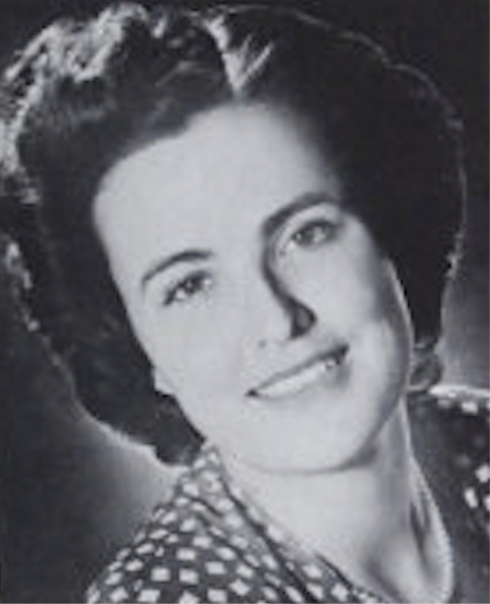

-1-MasterItem.svg)
Stories of Westminster United Church & its People / Page
166
The story of music in Westminster doesn’t end here. In the first decade of 2000 Glen Harrison’s
health began to decline to the point where he needed a rest from 50 years at
Westminster and many
years before that as a music teacher, and as Music Supervisor for Seven Oaks
School Division and
later of Winnipeg School Division (separate article can be found on Glen).
In September of 2009 Glen’s place at the podium was filled by Nathan Poole who came to us after a
stint at First Presbyterian Church in Winnipeg. At the time of this writing
Nathan is still with us.
When his contribution becomes history someone else will hopefully write Nathan’s story of music
making and of the people who have sung with him in Westminster Church Choir.
Myfanwy Evans (1921-1970)
Myfanwy Evans, born of Welsh parents in Winnipeg in 1921, inherited
the Welsh love of music and singing. Her first singing engagement was
in the role of Buttercup in a high school production of
HMS Pinafore
. That
experience led to her formal vocal and music studies. In competition she
won the highest singing honour in the Manitoba Music Festival, the Rose
Bowl (held in the Civic Auditorium). Subsequently she was featured in the
film
Listen To The Prairies
, produced by Canada’s National Film Board
which dealt with the Festival.
She was soon in demand as a singer performing regularly for the
Canadian Broadcasting Corporation both locally and nationally. She made
solo appearances with the Winnipeg Symphony Orchestra under the direction of
Walter Kaufmann
and later with the Minneapolis Symphony, under the direction of Dmitri
Mitropoulis. During the
1940s she was the contralto soloist with Westminster Church Choir (known
affectionately
as Muvvie!)
In 1950 she travelled to London for study and in pursuit of a career in singing.
She auditioned
successfully for the Sadler’s Wells Opera Company and for the British Broadcasting Corporation,
but turned down these opportunities in order to return to Canada to marry
William S. Story,
also of Winnipeg.
Table
of Contents
Music at Westminster
